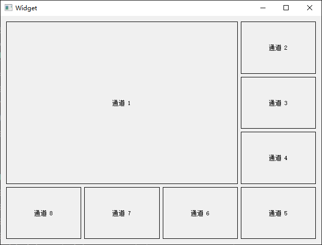
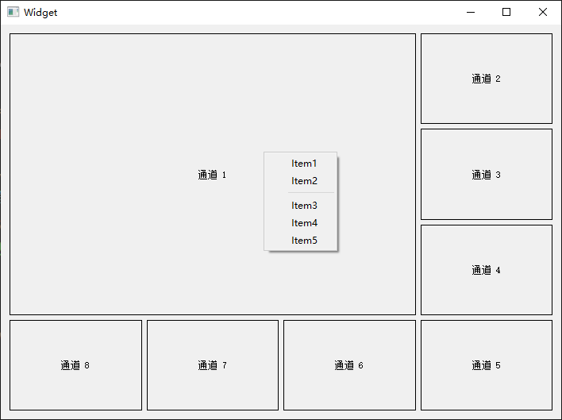
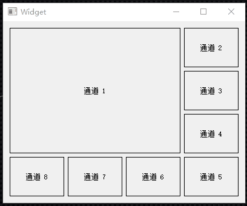

QGridLayout类在网格中布局小部件。 QGridLayout利用它可用的空间(通过父布局或parentWidget())，将其划分为行和列，并将它管理的每个小部件放入正确的单元格中。 列和行表现相同;我们将讨论列，但是对于行也有相同的函数。 每个列都有一个最小宽度和一个拉伸因子。最小宽度是使用setColumnMinimumWidth()和该列中每个小部件的最小宽度的集合中最大的。拉伸系数是使用setColumnStretch()设置的，它决定了列将超出其必要的最小值获得多少可用空间。 通常，每个托管小部件或布局都使用addWidget()放到自己的单元格中。一个小部件也可以使用addItem()和addWidget()的行和列跨越重载来占用多个单元格。如果这样做，QGridLayout将猜测如何在列/行中分配大小(基于拉伸因子)。
核心示例代码：
Widget::Widget(QWidget *parent) :
QWidget(parent),
ui(new Ui::Widget)
{
ui->setupUi(this);
//创建窗体类
QWidgetList widgets;
for (int i = 0; i < 8; ++i) {
//这里用QLabel做演示，可以改成自己的窗体类
QLabel *label = new QLabel;
label->setFrameShape(QLabel::Box);
label->setAlignment(Qt::AlignCenter);
label->setText(QString("通道 %1").arg(i + 1));
widgets << label;
}
//挨个把窗体添加到布局
ui->gridLayout->addWidget(widgets.at(0), 0, 0, 3, 3);
ui->gridLayout->addWidget(widgets.at(1), 0, 3, 1, 1);
ui->gridLayout->addWidget(widgets.at(2), 1, 3, 1, 1);
ui->gridLayout->addWidget(widgets.at(3), 2, 3, 1, 1);
ui->gridLayout->addWidget(widgets.at(4), 3, 3, 1, 1);
ui->gridLayout->addWidget(widgets.at(5), 3, 2, 1, 1);
ui->gridLayout->addWidget(widgets.at(6), 3, 1, 1, 1);
ui->gridLayout->addWidget(widgets.at(7), 3, 0, 1, 1);
}
效果展示：

给窗体添加菜单。
首先我们需要捕获到鼠标点击事件，对鼠标点击事件进行过滤处理。安装事件过滤器并重写事件过滤函数：
Widget::Widget(QWidget *parent) :
QWidget(parent),
ui(new Ui::Widget)
{
ui->setupUi(this);
//安装事件过滤器
installEventFilter(this);
//实例化子对象
QWidgetList widgets;
for (int i = 0; i < 8; ++i) {
//这里用QLabel做演示可以改成自己的窗体类比如视频监控窗体
QLabel *label = new QLabel;
label->installEventFilter(this);
...
widgets << label;
}
...
}
bool Widget::eventFilter(QObject *watched, QEvent *event)
{
if (event->type() == QEvent::MouseButtonDblClick) {
qDebug() << "Mouse Button double Clicked.";
return true;
} else if (event->type() == QEvent::MouseButtonPress) {
//鼠标右键的地方弹出菜单
if (qApp->mouseButtons() == Qt::RightButton) {
menu->exec(QCursor::pos());
}
}
return QWidget::eventFilter(watched, event);
}
添加菜单，进行菜单展示：
Widget::Widget(QWidget *parent) :
QWidget(parent),
ui(new Ui::Widget)
{
ui->setupUi(this);
//安装事件过滤器
installEventFilter(this);
//实例化子对象
QWidgetList widgets;
for (int i = 0; i < 8; ++i) {
...
}
//挨个重新添加到布局
ui->gridLayout_3->addWidget(widgets.at(0), 0, 0, 3, 3);
...
ui->gridLayout_3->addWidget(widgets.at(7), 3, 0, 1, 1);
//实例化菜单
menu = new QMenu(this);
//先安排自己的菜单
//这里关联到一个槽函数处理,也可以关联到不同的槽函数
menu->addAction("Item1", this, SLOT(doAction()));
menu->addAction("Item2", this, SLOT(doAction()));
menu->addSeparator();
menu->addAction("Item3", this, SLOT(doAction()));
menu->addAction("Item4", this, SLOT(doAction()));
menu->addAction("Item5", this, SLOT(doAction()));
}
void Widget::doAction()
{
qDebug() << "菜单动作执行";
}
鼠标右键点击效果：

通道最大化显示和还原显示：
bool Widget::eventFilter(QObject *watched, QEvent *event)
{
static bool max = false;
if (event->type() == QEvent::MouseButtonDblClick) {
qDebug() << "Mouse Button double Clicked.";
if(!max){
//把所有窗体从布局中删除并隐藏
for(int i = 0; i < widgets.count(); i++){
ui->gridLayout_3->removeWidget(widgets.at(i));
widgets.at(i)->setVisible(false);
}
//只添加选中窗体并显示
QLabel *widget = (QLabel *) watched;
ui->gridLayout_3->addWidget(widget);
widget->setVisible(true);
max = true;
}
else{
//选中窗体从布局中删除并隐藏
QLabel *widget = (QLabel *) watched;
ui->gridLayout_3->removeWidget(widget);
widget->setVisible(false);
//挨个重新添加到布局
ui->gridLayout_3->addWidget(widgets.at(0), 0, 0, 3, 3);
ui->gridLayout_3->addWidget(widgets.at(1), 0, 3, 1, 1);
ui->gridLayout_3->addWidget(widgets.at(2), 1, 3, 1, 1);
ui->gridLayout_3->addWidget(widgets.at(3), 2, 3, 1, 1);
ui->gridLayout_3->addWidget(widgets.at(4), 3, 3, 1, 1);
ui->gridLayout_3->addWidget(widgets.at(5), 3, 2, 1, 1);
ui->gridLayout_3->addWidget(widgets.at(6), 3, 1, 1, 1);
ui->gridLayout_3->addWidget(widgets.at(7), 3, 0, 1, 1);
for(int i = 0; i < widgets.count(); i++){
widgets.at(i)->setVisible(true);
}
max = false;
}
return true;
} else if (event->type() == QEvent::MouseButtonPress) {
//鼠标右键的地方弹出菜单
if (qApp->mouseButtons() == Qt::RightButton) {
menu->exec(QCursor::pos());
}
}
return QWidget::eventFilter(watched, event);
}
效果展示：
